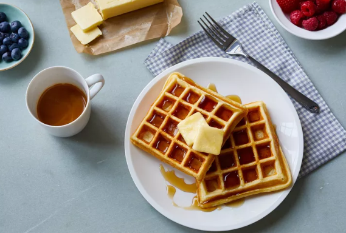

Waffles

Description
This waffle recipe is the only one you'll need to make homemade waffles with your waffle iron. Simple pantry ingredients mix up quickly in this easy batter that can be used right away or stored in the refrigerator for up to a week. Serve waffles hot with whipped cream and fresh fruit or with butter and maple syrup for either breakfast, brunch, or a snack.
Ingredients
- 1 cup all-purpose flour, spooned and leveled
- 2 tablespoons sugar
- 1 teaspoon baking powder
- ¼ teaspoon salt
- 1 cup milk
- 2 large eggs
- 4 tablespoons (½ stick) unsalted butter, melted
- Maple syrup and butter, as desired, for serving
Steps
- Preheat the waffle iron and combine the dry ingredients: Preheat the waffle iron according to the manufacturer's instructions. In a large bowl, whisk together the flour, sugar, baking powder, and salt; set aside.
- Add melted butter: Gently whisk in the melted butter.
- Cook the waffles: Following the manufacturer's instructions, cook the waffles until deep brown and crisp. For a standard waffle iron, pour a generous 1/2 cup of batter into the center, spreading it to within 1/2 inch of the edges, and close. The waffle will cook in 2 to 3 minutes.
- Serve warm: Serve the waffles warm, with maple syrup and butter as desired.